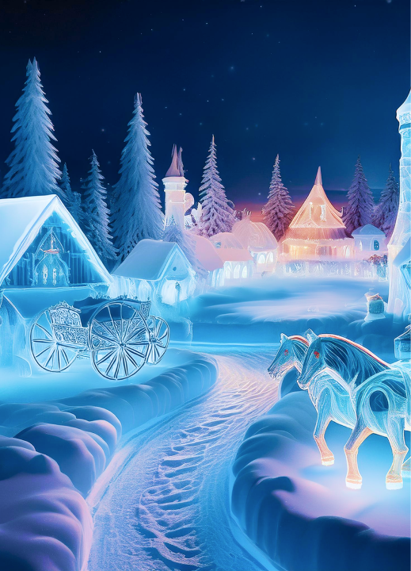

Vamos lá
01 Glacial
Mergulhe na aventura congelante do Parque de Gelo do Castelo Setland, uma das atrações mais emocionantes do parque temático! Com temperaturas que chegam a 17 graus Celsius abaixo de zero, é o destino perfeito para os corajosos em busca de uma experiência única.
Sinta a magia da neve e do gelo em pleno centro-oeste brasileiro, algo realmente raro! E para garantir o conforto durante a aventura, o Castelo Setland oferece casacos quentinhos e higienizados diariamente.
Leia mais →
